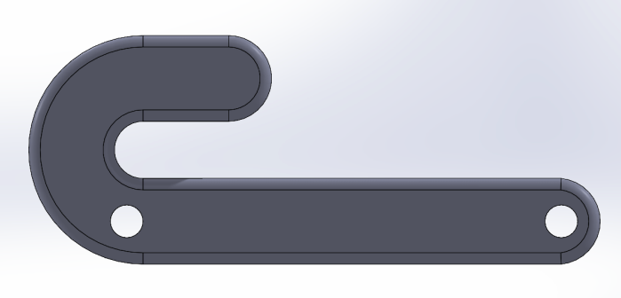

GOAL I designed a 4-bar linkage that can be contained within the bounds of a 8 ½ x 11” piece of paper and modeled/simulated motion using SolidWorks. LINKAGE ASSEMBLY (RIGHT) The bottom linkage (Base) is fixed along the horizontal, left linkage (crank) is set perpendicular to the base, top (coupler) and right (rocker) linkages are set where their fastening to base and left allow based on linkage length. For the purposes of this motion analysis report, ‘linkage length’ will be synonymous with ‘linkage effective length,’ the distance between the centers of the two fastener holes on a linkage. Linkage lengths are included below. ENGINEERING DRAWINGS Assembly: Exploded View: Top:  Left: Right: Base: CONFIGURATION TYPE Calculations for the Grashoff condition and behavior equations using the linkage lengths indicate that the four bar linkage is a concave, crank-rocker type linkage. TRACE A trace point was placed on the joint connecting the coupler and rocker linkages. X and Y displacements for the path the trace point traces as the four bar linkage assembly moves were plotted. 4 Bar Trace Point Position Y vs X. This shows the path of the trace point through the entire rotation motion of the crank. Y positions range between y= +0.76 and y=+3.80 inches, and X positions range between x= -5.28 and x = 0.86 inches The trace point traces an arc during the assembly’s motion rather than a full circle, which is consistent with the previous identification of the output linkage as a rocker. The trace point had a maximum X displacement of 6.14 inches, and a maximum Y displacement of 3.03 inches. DESIGN EVALUATION Given the limited range of motion for a crank-rocker type four bar linkage, and the design constraint that the linkage and all movement remain within an 8 ½ x 11” boundary, the maximum displacement of the four bar linkage design may be increased by assigning the trace point to an additional extension of the coupler linkage. For this specific linkage placing the crank and rocker arms in a downward position, an increase in radius of the bend in the coupler linkage’s hook, as well as an increase in the hook’s length would result in a straight line motion mechanism. The limited angle of motion for the two supporting arms of a straight line motion machine has the potential to minimize area occupied by support linkages while maximizing distance traveled by a trace point at the tip of a coupler’s extra arm(s).